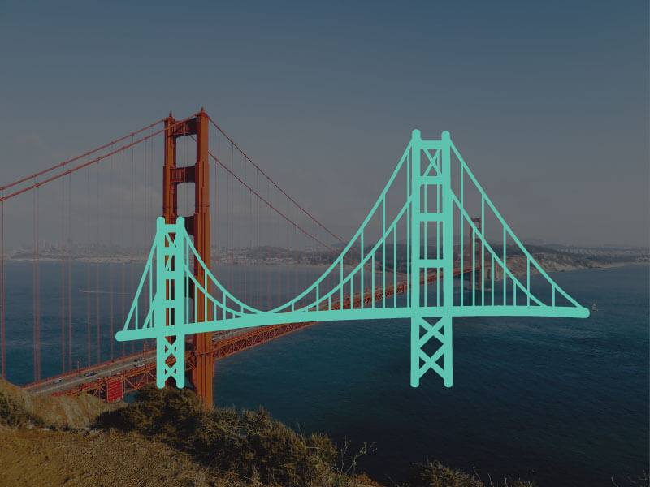

Golden Gate Bridge
The Golden Gate Bridge is a suspension bridge spanning the Golden Gate, the one-mile-wide strait connecting San Francisco Bay and the Pacific Ocean. The structure links the American city of San Francisco, California – the northern tip of the San Francisco Peninsula – to Marin County, carrying both U.S. Route 101 and California State Route 1 across the strait. The bridge is one of the most internationally recognized symbols of San Francisco, California, and the United States. It has been declared one of the Wonders of the Modern World by the American Society of Civil Engineers.
The Frommer’s travel guide describes the Golden Gate Bridge as “possibly the most beautiful, certainly the most photographed, bridge in the world.” At the time of its opening in 1937, it was both the longest and the tallest suspension bridge in the world, with a main span of 4,200 feet and a total height of 746 feet.